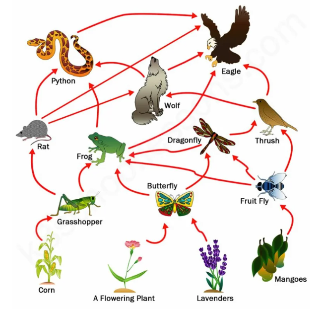
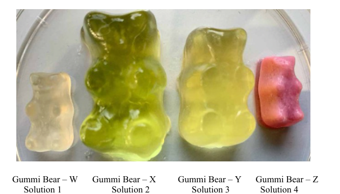
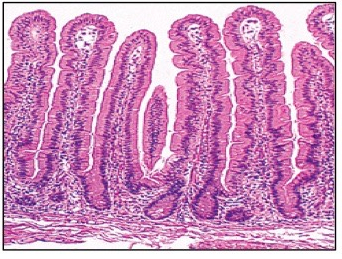
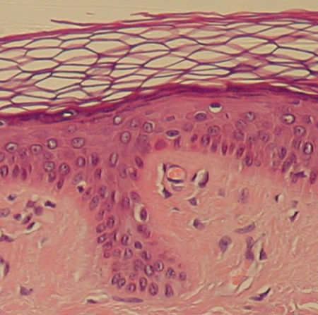
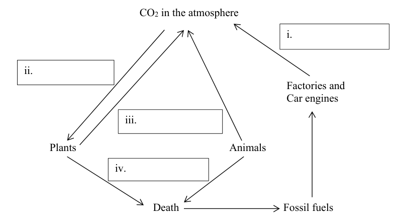
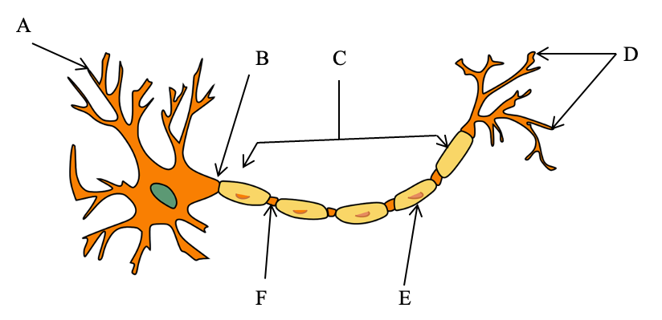
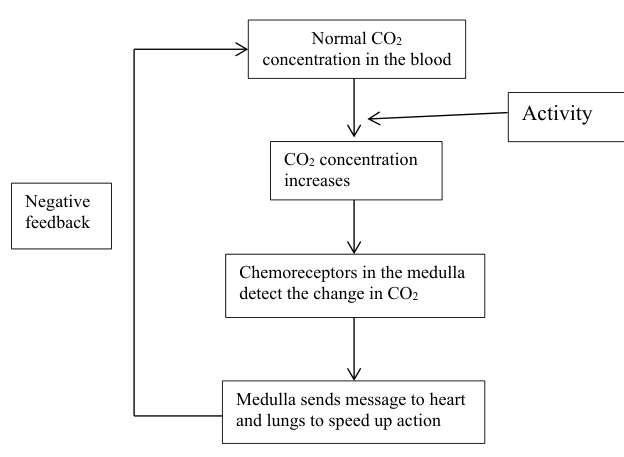
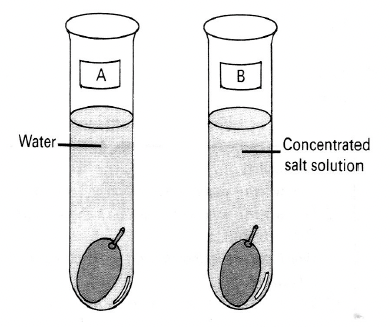

This exam covers ecosystems, chemistry and coordination and control (84 marks). (Ecosystems is no longer a separate topic in the course, but the questions are still good revision.) Section B question numbers follow the original paper, which has no Question 10.
Data page: periodic table.

Section A: Multiple choice (27 marks)
Ecosystems
Which of the following is not one of the characteristics of living things?
The characteristic is respiration (a chemical process in cells), not breathing.
Which of the following terms has been defined correctly?
Which statement correctly refers to producers in an ecosystem?
Questions 4 and 5 refer to this food web.

Which statement is true, based on this food web?
Which food chain is correct for this food web?
What abiotic factors would you expect when visiting this desert ecosystem?
Which organelles are found in prokaryote cells?
Which bacteria convert nitrates in the soil back into atmospheric nitrogen?
Which is a correct statement about photosynthesis?
Chemistry
Which statement about Group 17 (VII) elements is incorrect?
Sodium reacts violently in water. Which elements could be expected to react with water in a similarly violent way?
Which of the following occurs in the formation of an ionic bond?
The chemical properties of an element depend on:
Group 1 and 2 elements form:
In the periodic table, elements with the same number of outer shell electrons are placed in the same:
Which is the correctly balanced equation for the reaction of aluminium hydroxide and hydrochloric acid?
When a chemical reaction takes place, the total mass of the products is always:
Identify the correct formulae of these ions (lithium ion; iron(III) ion; nitride ion).
Coordination and control
Questions 19 and 20. Students put four gummi bears in four salt solutions of different concentrations (1, 2, 3 and 4) and left them for 30 minutes.

Which gummi bear was placed in the lowest salt concentration?
The change in appearance of the gummi bear in solution 4 was due to:
Question 21. Figure 1 shows the lining of the small intestine; figure 2 shows the lining of the skin.


The small intestine lining is very folded, whereas the skin lining is flat. Why is the small intestine folded?
Which type of neuron transmits an impulse from a receptor to the central nervous system?
In which part of the brain are balance and movement coordinated?
A football player receives a knock to the front of his head (forehead). Which part of the brain is most likely to be affected?
Which statement about the endocrine system is false?
A rise in external temperature increases a person's internal temperature. Which response brings the body temperature back to normal?
What is the correct order of the stimulus–response model?
Section B: Short answer (57 marks)
Ecosystems: Question 1 (8 marks)
| Organism | What it eats |
|---|---|
| Crustaceans | Salt water algae |
| Fish | Crustaceans, salt water algae, salt marsh plants |
| Salt water algae | Light energy (photosynthesis) |
| Grasshopper | Salt marsh plants |
| Salt marsh plants | Light energy (photosynthesis) |
| Heron | Fish |
| Snail | Salt water algae, salt marsh plants |
| Sandpiper | Crustaceans, salt water algae |
On paper, construct a food web showing all the feeding relationships. Describe it, then compare.
Producers at the bottom: salt marsh plants and salt water algae. Arrows (pointing towards the eater) run:
- salt water algae → crustaceans, fish, snail, sandpiper
- salt marsh plants → fish, grasshopper, snail
- crustaceans → fish, sandpiper
- fish → heron
Identify two primary consumers in the food web.
Any two of: grasshopper, snail, fish, crustaceans, sandpiper.
What trophic level(s) does the heron occupy?
Secondary consumer and tertiary consumer (both needed).
Toxic chemicals dumped into this ecosystem kill all the crustaceans. What would be the short-term effects on the ecosystem?
Fewer organisms are eating the salt water algae, so it will increase in number (1 mark). Fish and sandpipers have less food available, so they will decrease in number (1 mark).
Identify two ways energy can be lost at each stage of a food chain.
Any two: as heat from respiration; in waste or death; used for cell/tissue growth (and movement).
What is the difference between autotrophic and heterotrophic organisms?
Autotrophs make their own food, by photosynthesis or chemosynthesis (1 mark). Heterotrophs get their food by eating other organisms (1 mark).
Question 2 (9 marks)

Complete the labels.
ii.
iii.
iv.
Outline the important role bacteria and fungi play in an ecosystem.
They are decomposers (1 mark). They break down dead organic matter that would otherwise build up, and recycle the nutrients for the producers (1 mark).
Humans have been producing an excess of gases, including CO2 and CH4, which build up in the atmosphere. Outline the effect of this layer of gases on the planet.
These greenhouse gases trap heat close to the Earth's surface, causing the Earth to warm up (the enhanced greenhouse effect).
Write the balanced chemical equation for aerobic respiration.
C6H12O6 + 6O2 → 6CO2 + 6H2O + energy
Compare the processes of photosynthesis and respiration.
Photosynthesis builds up larger organic molecules such as glucose from small inorganic molecules (CO2 and water) (1 mark); respiration breaks down glucose into small inorganic molecules (1 mark).
Or: photosynthesis requires an input of (light) energy; respiration releases energy.
Chemistry: Question 3 (4 marks)
Calcium has five stable isotopes; the two most abundant are calcium-40 and calcium-44.
(i) How are calcium-40 and calcium-44 similar? (ii) How are they different?
(i) They have the same atomic number (number of protons, and electrons) (1 mark). (ii) They have different mass numbers (numbers of neutrons) (1 mark).
Electron configuration of a calcium atom:
Electron configuration of a calcium ion:
State the formulae of these ionic compounds.
Sodium oxide:
Lithium chloride:
Iron(III) hydroxide:
Calcium hydrogen carbonate:
Helium has two electrons (electron configuration 2). It "should" be in Group 2, but is placed in Group 18 (VIII). Explain why.
The first electron shell only needs 2 electrons to be full, so helium has a full outer shell (1 mark). All noble gases have full outer shells, making them very stable and unreactive, so helium belongs with them in Group 18 (1 mark).
Question 6 (3 marks)
Why are chemical equations that are not balanced always incorrect?
Because of the law of conservation of mass: atoms cannot be created or destroyed, only rearranged, so there must be the same number of each type of atom on each side of the equation.
Balance the equation: Fe2O3 + C → Fe + CO2
Question 7 (6 marks)
Electron shell arrangements: potassium ; chlorine
The ionic compound formed between a magnesium ion and an oxide ion is called , with the formula .
The ionic compound formed between a chromium(III) ion and a sulfate ion is called , with the formula .
Coordination and control: Question 8 (3 marks)
On Year 9 camp, a student hiking in the Brisbane Ranges found a strange object attached to a tree trunk. The student and teacher made observations to decide whether it was living or non-living.
Give one characteristic that would definitely show the object is living. Justify your answer.
For example: if the object was respiring, it would definitely be living, because every living organism needs energy from respiration for growth etc. Any characteristic of living things can be used except movement, which doesn't confirm it is alive (things can be moved by wind, for example).
What is one difference between unicellular and multicellular organisms?
Unicellular organisms are made of one cell only, whereas multicellular organisms are made of many cells.
Give one advantage of being multicellular rather than unicellular.
Multicellular organisms can have specialised cells that carry out different functions, so each cell doesn't have to carry out every characteristic of life; or they can grow larger, which gives them a competitive advantage.
Question 9 (7 marks)

Label the parts of the motor neuron.
Label A:
Label B:
Label C:
Label D:
Label E:
Label F:
Complete the table of brain parts and functions.
| Part of the brain | Function |
|---|---|
| Medulla oblongata | |
| The largest part of the brain, involved in complex thought, memory and problem solving | |
| Hypothalamus | |
| Produces many hormones involved in regulating the internal environment |
A student accidentally puts their hand in boiling water, and a reflex arc moves it out before the pain is felt. On paper, draw the reflex arc from the hand to the arm muscles on a cross-section of the spinal cord, labelling: receptor, sensory neuron, interneuron, motor neuron, effector. Describe it, then compare.
The receptor in the skin of the hand → a sensory neuron carrying the impulse into the spinal cord (through the dorsal side) → an interneuron inside the grey matter of the spinal cord → a motor neuron leaving the spinal cord (ventral side) → the effector, the muscle in the arm, which contracts. (−½ mark for each incorrect label.)
Question 11 (4 marks)
The concentration of CO2 in the blood is regulated by homeostasis. The diagram shows the changes that take place when blood CO2 rises.

What is negative feedback in this example?
Negative feedback is when an effector's response returns the original change in the stimulus back to normal (1 mark). Here, the heart pumps blood faster and the lungs breathe faster, so more CO2 is lost from the body and the blood CO2 level falls back to normal (1 mark).
Using the diagram, give one example of where the nervous system is involved.
Any one: the chemoreceptors in the medulla; a sensory neuron carrying the message from the chemoreceptors to the medulla; a motor neuron from the medulla to the heart muscle to speed up its contractions.
Give an example of an activity that would increase the CO2 concentration in the blood.
Any type of exercise (or breathing into a bag).
Question 12 (5 marks)
In the practical "Cell Size Limits and Diffusion", two grapes with their stalks still on were weighed. Grape A was placed in distilled water and grape B in a saturated salt solution.

What is the independent variable?
The concentration of the solution (water or salt solution).
Give two controlled variables in this experiment.
Any two: the same type of grape; stalks still attached; the temperature; the volume of solution; the time left in the solution.
The grapes were left overnight, then dried and reweighed. What change in mass would you expect for each grape? Explain.
Grape A gains mass (swells): water moves into the grape by osmosis, from the low solute concentration outside to the higher solute concentration inside (1 mark).
Grape B loses mass (shrinks): water moves out of the grape by osmosis, from the lower solute concentration inside to the very high solute concentration outside (1 mark).